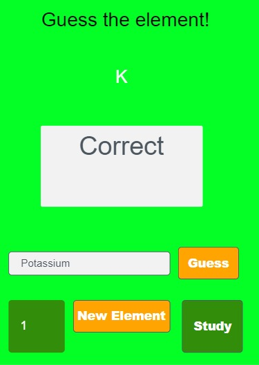
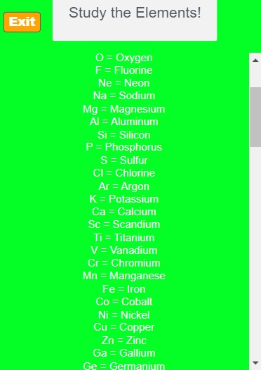

The problem
GIA Hacks 2 challenged high school students to either build software addressing a global or local issue or create software that helps students, including educational tools.
My teammate and I had taken chemistry the previous school year and realized how important understanding the periodic table was for succeeding in chemistry and other science courses. We wanted to create a simple tool that could help future students study element names and symbols through both review and active practice rather than relying only on memorization from a traditional periodic table.
How it works
PeriodiQ combines a study mode and quiz mode using information from a periodic table dataset.
In Study mode, users can scroll through a reference list matching chemical symbols with
their corresponding element names, such as K = Potassium and
Fe = Iron.
In Quiz mode, the app displays a chemical symbol and asks the user to identify the corresponding element. The user types an answer and presses Guess, and the app checks the response and immediately indicates whether it is correct. Correct answers contribute to the user's score, which is displayed on the quiz screen. Users can press New Element to receive another question or switch to Study whenever they need to review the elements.
This creates a simple learning cycle of study → recall → feedback → score → repeat.
Process
- Worked with my teammate to identify an educational problem that fit GIA Hacks 2's student-focused challenge.
- Used our recent experience taking chemistry to focus on learning periodic table elements and symbols.
- Built the application in Code.org App Lab using JavaScript.
- Integrated a periodic table dataset with the application rather than manually building the quiz around static questions.
- Created the Study screen to provide students with a reference for element names and symbols.
- Developed the Quiz screen to generate element questions, evaluate user responses, provide feedback, and track scores.
- Connected the quiz and study interfaces so students could move between learning and testing themselves.
- Debugged challenges involving communication between the App Lab interface and dataset.
- Completed a working application and submitted a video demonstration and project entry to GIA Hacks 2.
Results
PeriodiQ was successfully completed and submitted to GIA Hacks 2, an international virtual hackathon with 220 registered participants and 53 submitted projects. The project did not place in the hackathon's Top 5 — the accomplishment here is completing and demonstrating a functional educational application during the two-week hackathon. PeriodiQ remains listed in the official GIA Hacks 2 project gallery.
What I'd do differently
I would expand the quiz beyond identifying an element from its symbol by adding questions involving atomic numbers, element groups, properties, and symbol-to-name/name-to-symbol identification. I would also add difficulty levels, question randomization, accuracy statistics, and a better progress-tracking system so students could identify which elements they struggle with most.
I would also redesign the interface to make the study screen more visual and interactive, potentially using an actual periodic table layout rather than a scrollable list. This would turn PeriodiQ from a simple memorization tool into a more complete chemistry study application.
Gallery

